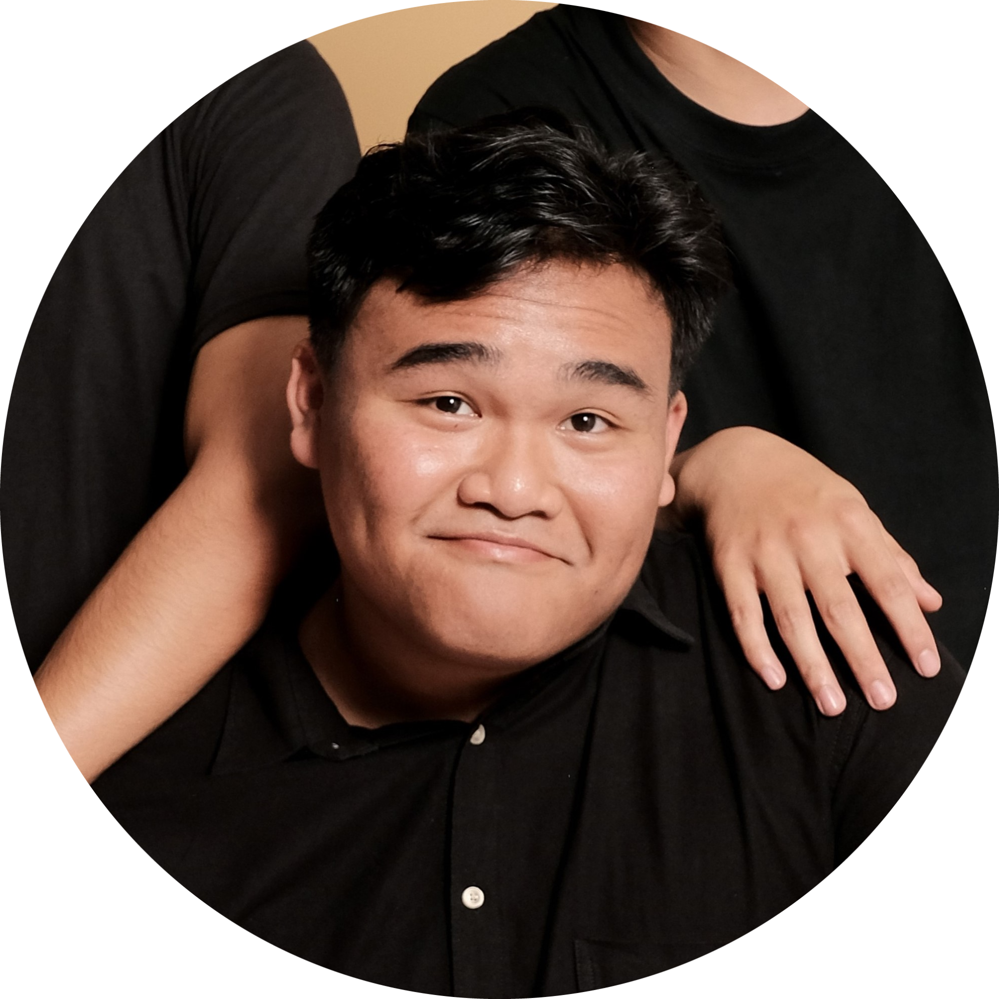
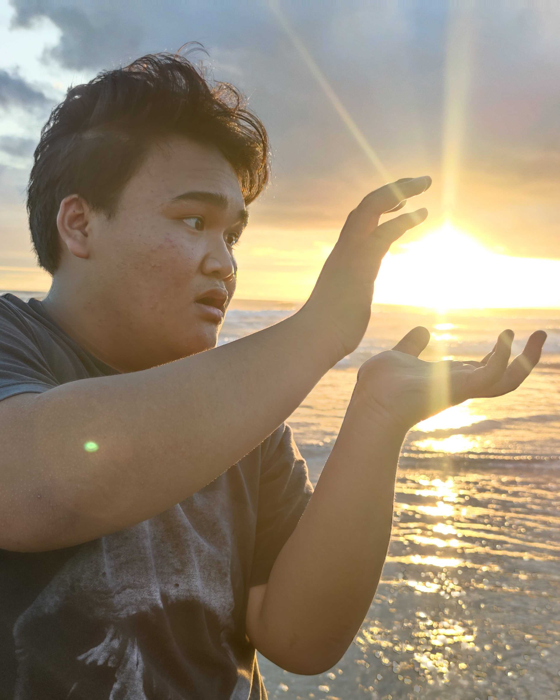

Andy Setiawan
An Electrical Engineering Student



An Electrical Engineering Student

Heya! 👋 I'm Andy Setiawan, an Electrical Engineering student at UBC
with a passion for building robots, automation, and fixing things
others gave up on. From Bali to Vancouver, my journey's been a mix
of hands-on repair, tinkering with microcontrollers, and guiding
others through the magic of electronics.
I'm all about mixing creativity with logic, and I enjoy sharing what
I learn along the way—whether it's making a portable oscilloscope or
cracking tricky math problems. Always up for a challenge and a good
chat about tech, so feel free to reach out!

Three-wheeled robot to detect and pick up coins. Switches between autonomous and manual via radio.

Controlled a reflow oven with an 8051 MCU and relay. Displayed data and logged thermal profiles in Python.

Measured voltage, resistance, and capacitance. Visualized readings in real-time via serial and Python.